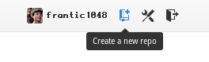
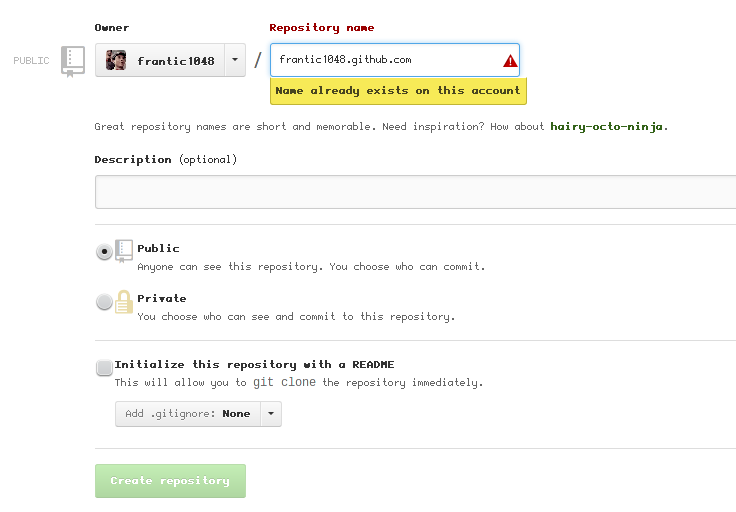

利用Github+Pelican搭建个人Blog
在GitHub上创建工程
如果你还没有GitHub账户，去注册一个~
登录GitHub，点击页面顶部的显示你用户名位置右边的创建新工程 (Create a new repo) 按钮，来到创建新工程页面

建立一个名为xxx.github.com的工程，这里我用的是frantic1048，我已经创建好了，所以提示已存在。

填写好工程名后，点击下方的创建工程（Create repository）按钮。
接下来进入项目的设置页面，在GitHub Pages这栏（我因为已经创建过页面了所以有提示"Your site is published at ......"），点击Automatic Page Generator，接下来几步一路continue就可以了，因为生成的页面在随后会被清空。
这步完成之后，通过http://xxx.github.com/或者http://xxx.github.io/就可以访问生成的页面了 ...